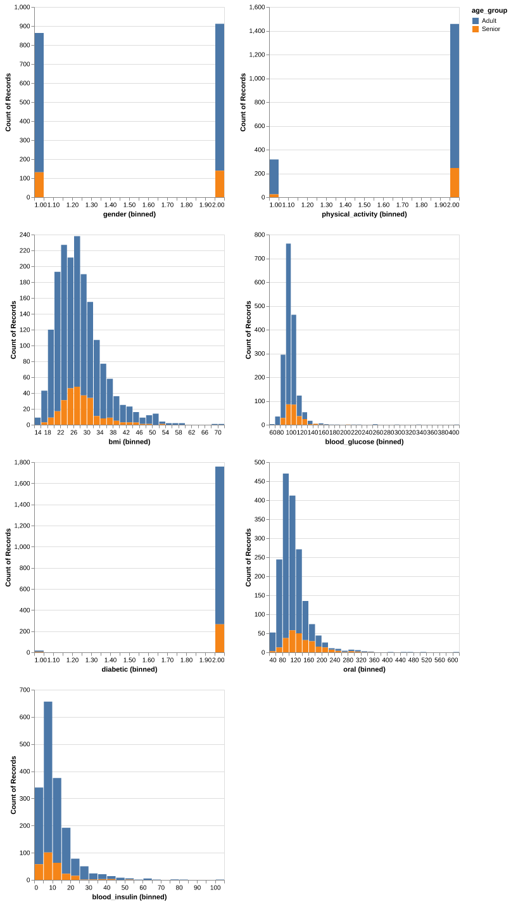
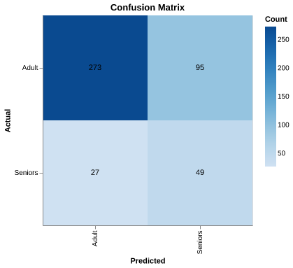
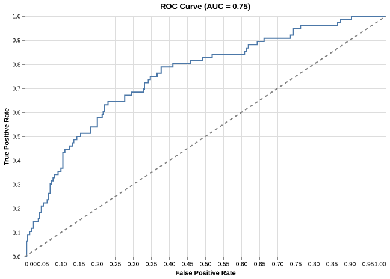

| gender | physical_activity | bmi | blood_glucose | diabetic | oral | blood_insulin | |
|---|---|---|---|---|---|---|---|
| count | 1775 | 1775 | 1775 | 1775 | 1775 | 1775 | 1775 |
| mean | 1.51 | 1.82 | 27.78 | 99.11 | 1.99 | 113.89 | 11.66 |
| std | 0.5 | 0.38 | 7.15 | 17.08 | 0.1 | 45.79 | 9.54 |
| min | 1 | 1 | 14.5 | 63 | 1 | 40 | 1.02 |
| 25% | 1 | 2 | 22.7 | 91 | 2 | 87 | 5.8 |
| 50% | 2 | 2 | 26.7 | 97 | 2 | 104 | 8.89 |
| 75% | 2 | 2 | 31.1 | 103 | 2 | 129 | 14.26 |
| max | 2 | 2 | 70.1 | 405 | 2 | 604 | 102.29 |
Abstract
This blog delves into the use of machine learning classification models specifically Logistic Regression, to predict age groups (adults versus seniors) based on health data. By applying Logistic Regression, we explored how these models can be leveraged to understand age-related health patterns, an essential task for designing more targeted public health interventions. Although the model showed initial promise, its effectiveness was limited by class imbalance, with most predictions falling into the adult category. We also explored solutions such as class weighting to improve balance and refine predictions. Despite this, the model’s accuracy for predicting seniors remained low in terms of precision and recall, indicating there is still room for improvement. Optimizing hyperparameters and focusing on metrics like precision and recall rather than overall accuracy could yield better results. Ultimately, this analysis demonstrates the potential of machine learning to inform public health strategies, providing actionable insights for more personalized and effective care for aging populations.
Introduction
As we grow older, our health needs evolve in ways that profoundly impact our quality of life. Imagine if we could leverage data to predict these changes, leading to more personalized and effective public health programs. This analysis explores whether health data can distinguish between adults (under 65) and seniors (65+), offering insights into how we might improve public health initiatives for aging populations.
The dataset used to answer this question is the National Health and Nutrition Survey 2013-2014 (NHANES) Age Prediction Subset (NHANES (2019)). It was originally prepared for a research paper on predicting diabetes and cardiovascular disease in patients (Dinh and Miertschin (2016) and Mukhtar and Al Azwari (2021)). The dataset’s stated purpose was to assess the health and nutritional status of adults and children in the United States (Papazafiropoulou (2024)), however respondents were classified as either Adults (respondents under 65 years of age) or Seniors (respondents 65 years of age or older). Respondents were located in the United States and provided data through interviews, physical examinations, and laboratory tests to the National Center for Health Statistics (NCHS) (part of the Centers for Disease Control and Prevention (CDC)). While the dataset has been used in previous research on diabetes and cardiovascular disease, this analysis focuses specifically on age prediction. By examining patterns in health data, we aim to evaluate the feasibility of machine learning models for classifying age groups and identify potential avenues for improving public health strategies.
This analysis focuses on predictive modeling, addressing challenges such as class imbalance and model performance metrics like precision and recall. While we concentrate on age classification, exploring the factors most predictive of age lies outside the scope of this study. By narrowing our focus, we aim to provide actionable insights that inform future work in age-related health analytics.
Methods & Results
Data Sources
This dataset was sourced from the [NHANES], a large-scale public health initiative that collects health and nutritional data from a representative sample of adults and seniors in the U.S. Data were collected through a combination of clinical measurements and self-reported surveys between [years]. The dataset contains information on demographic, physical activity, and metabolic health factors.
Conducting EDA on the training set
The training data has 1775 observations. Since gender, physical_activity, and diabetic features were categorical, only the mean and standard deviation from the table above were relevant for those columns. Body mass index values below 18 are considered underweight, and values over 40 are considered severely obese. We observed that the middle 50% of values fall between 22.7 & 31.1, though the max was 70.1, which is concerningly high. Blood glucose, oral, and blood insulin have their own ranges, so it was necessary to standardize these variables before fitting our model.
Visualization for EDA
The distributions in Figure 1 below show class imbalance, with very few seniors relative to adults in our dataset. Across numeric variables, mode values for seniors were less pronounced than they were for adults, though ranges seemed similar. Seniors seemed to have higher oral values and lower blood insulin values than adults.

Preprocessing Steps
To prepare the data for analysis, we applied several cleaning and transformation steps:
Column Renaming: Variable names were updated to be descriptive (e.g., ‘RIDAGEYR’ → ‘Age’) for clarity.
Invalid Values: Observations with undocumented values in ‘physical_activity’ and ‘diabetic’ were removed to ensure consistency with the dataset’s metadata.
One-Hot Encoding: Categorical variables (e.g., gender, physical_activity) were converted into binary indicators to enable their use in machine learning models.
Standardization: Numeric variables (e.g., BMI, blood glucose) were standardized to ensure comparability across features with different scales.
Analytical Approach
We tested three models to classify respondents as adults or seniors based on health and nutrition data:
Dummy Classifier: A baseline model predicting the majority class.
Logistic Regression: Selected for its simplicity, interpretability, and alignment with healthcare applications.
Support Vector Classifier (SVC): Included to explore the potential of non-linear relationships in improving classification.
Performance was evaluated using metrics like precision, recall, F1-score, and AUC-PR, chosen for their ability to assess model performance in imbalanced datasets.
| Unnamed: 0 | test_score | train_score | |
|---|---|---|---|
| 0 | Dummy | 0.847887 | 0.847887 |
| 1 | Logistic | 0.696338 | 0.706056 |
| 2 | SVC | 0.676056 | 0.703521 |
Testing Best Model on Test Data
Since logistic regression had the best mean cross validation score, we selected it as our final model.
The model’s accuracy on test data was 0.725.
Tools
The following software packages were used in this project: Chorev et al. (2022), Harris et al. (2020), Bantilan (2020), Pedregosa et al. (2011), The pandas development team (n.d.), VanderPlas et al. (2018), Van Rossum and Drake (2024).
Results
The model’s precision score was 0.34, recall score was 0.645 and f1 score was 0.445.
Visualizing model performance

The confusion matrix (Figure 2) showed that while the model score is 0.725, it did very poorly at recall ( 0.645 ) and quite poorly at precision (0.34 ).

This performance was reflected in the ROC curve above (Figure 3). While it could differentiate the positive class “Senior” from the negative class to some extent, the model struggled to achieve both high true positive rates and low false positive rates. An AUC of 0.75 means that there is a 75% chance that a randomly chosen “Senior” will be ranked higher than a randomly chosen “Adult” by the model. In other words, the model is correctly distinguishing between “Senior” and “Adult” 75% of the time. With the AUC as 0.75, it means that 75% of the time, a randomly chosen “Senior” will have a higher predicted probability of being “Senior” than a randomly chosen “Adult”. This is a good indication that the model is better than random guessing, especially in distinguishing “Senior” from “Adult”.
Discussion
Summary of Findings:
Our analysis sought to determine whether health and nutritional data could be used to predict whether individuals are adults (under 65) or seniors (65+). The results showed that age group prediction is feasible with moderate accuracy (~73.0%), but significant room for improvement remains. The initial high accuracy was largely due to class imbalance, with the model heavily favoring adults, the majority class. This highlighted the need for balanced metrics like F1 score to better evaluate the model’s performance.
Implications:
These findings indicate that predictive models can be a valuable tool for identifying age-related health patterns, which could inform public health strategies. However, the model’s current limitations—particularly its difficulty in identifying seniors—underscore the need for further refinement before it can be used in practice.
Recommendations:
- Improving Data Handling: Address outliers in features like “physical_activity” and “diabetic” with deeper investigation rather than outright removal. Expand EDA to include pairwise correlations and feature importance analysis to reduce redundancy and engineer meaningful features.
- Model Enhancement: Incorporate hyperparameter tuning (e.g., tuning
Cin Logistic Regression) and use class weighting to address imbalance. Shift focus to metrics like precision, recall, and F1 score to ensure balanced performance.
- Alternative Modeling Approaches: Explore non-linear models, such as random forests, to capture potential interactions between health and nutritional factors that Logistic Regression may miss.
- Future Research: Investigate the most predictive health and nutritional factors for age classification. This could lead to actionable insights for tailoring public health programs to specific age groups.
Limitations and Future Work:
The analysis faced several limitations, including oversimplified data cleaning and limited feature exploration during EDA. Logistic Regression, while interpretable, may not fully capture the complexity of age-related health patterns. Future work should focus on deeper feature analysis, advanced modeling techniques, hyper parameter tuning and incorporating a broader range of health and demographic variables.
Conclusion:
Data science is inherently iterative, and this analysis represents a step toward leveraging health data for age classification. By addressing the outlined limitations and exploring more advanced methods, we can better understand age-related health needs and design interventions that improve health outcomes for aging populations.


No matching items
References
Bantilan, Niels. 2020. “Pandera: Statistical Data Validation of Pandas Dataframes.” In Proceedings of the 19th Python in Science Conference, edited by Meghann Agarwal, Chris Calloway, Dillon Niederhut, and David Shupe, 116–24. https://doi.org/ 10.25080/Majora-342d178e-010 .
Chorev, Shir, Philip Tannor, Dan Ben Israel, Noam Bressler, Itay Gabbay, Nir Hutnik, Jonatan Liberman, Matan Perlmutter, Yurii Romanyshyn, and Lior Rokach. 2022. “Deepchecks: A Library for Testing and Validating Machine Learning Models and Data.” Journal of Machine Learning Research 23: 1–6. http://jmlr.org/papers/v23/22-0281.html.
Dinh, Andrew, and Susan Miertschin. 2016. “A Data-Driven Approach to Predicting Diabetes and Cardiovascular Disease with Machine Learning.” Semantic Scholar. https://www.semanticscholar.org/paper/A-data-driven-approach-to-predicting-diabetes-and-Dinh-Miertschin/01af1548ff1f3661d8bb813e8c35ee219a79ca9f.
Harris, Charles R., K. Jarrod Millman, Stéfan J van der Walt, Ralf Gommers, Pauli Virtanen, David Cournapeau, Eric Wieser, et al. 2020. “Array Programming with NumPy.” Nature 585: 357–62. https://doi.org/10.1038/s41586-020-2649-2.
Mukhtar, Hamid, and Sana Al Azwari. 2021. “Investigating Non-Laboratory Variables to Predict Diabetic and Prediabetic Patients from Electronic Medical Records Using Machine Learning.”
NHANES. 2019. “National Health and Nutrition Health Survey 2013-2014 (NHANES) Age Prediction Subset.” UCI Machine Learning Repository.
Papazafiropoulou, Athanasia K. 2024. “Diabetes Management in the Era of Artificial Intelligence.” Archives of Medical Sciences. Atherosclerotic Diseases 9: e122–28.
Pedregosa, Fabian, Gaël Varoquaux, Alexandre Gramfort, Vincent Michel, Bertrand Thirion, Olivier Grisel, Mathieu Blondel, et al. 2011. “Scikit-learn: Machine Learning in Python.” Journal of Machine Learning Research 12: 2825–30. https://jmlr.csail.mit.edu/papers/v12/pedregosa11a.html.
The pandas development team. n.d. “pandas-dev/pandas: Pandas.” https://doi.org/10.5281/zenodo.3509134.
Van Rossum, Guido, and Fred L. Drake. 2024. “Python 3 Programming Language.” https://www.python.org.
VanderPlas, Jacob, Brian Granger, Jeffrey Heer, Dominik Moritz, Kanit Wongsuphasawat, Arvind Satyanarayan, Eitan Lees, Ilia Timofeev, Ben Welsh, and Scott Sievert. 2018. “Altair: Interactive Statistical Visualizations for Python.” Journal of Open Source Software 3 (32): 1057. https://doi.org/10.21105/joss.01057.